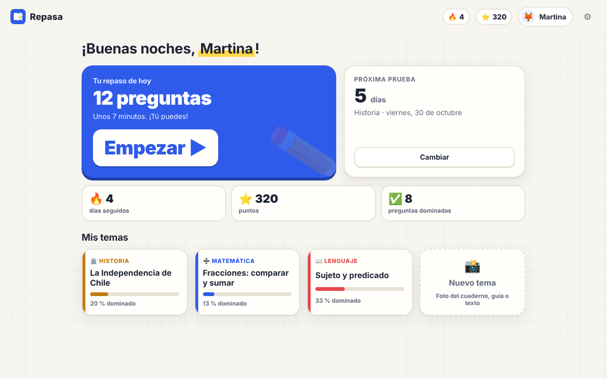
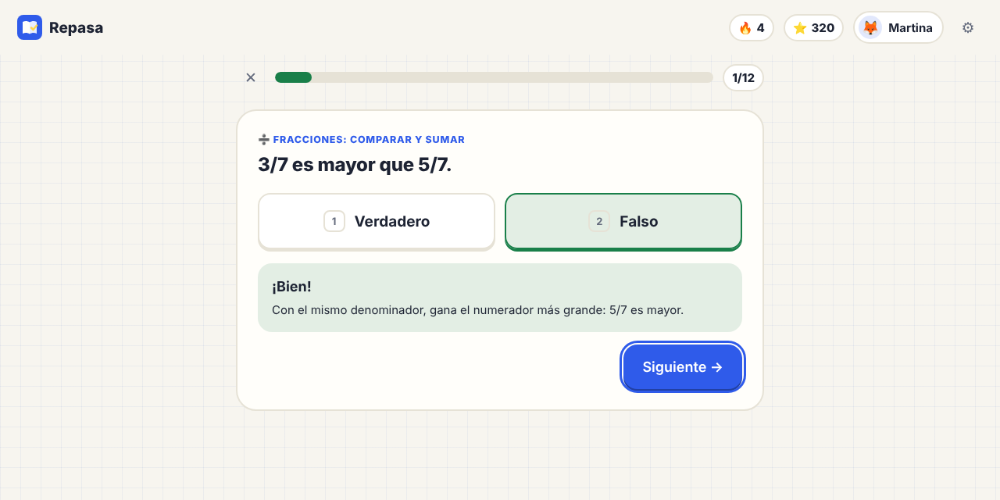

Repasa
RepasaFoto del cuadernoNotebook photo
Fotos del cuaderno o de la guía, un PDF o texto pegado. Eliges el curso y el ramo (o dejas que lo adivine).Photos of the notebook or worksheet, a PDF or pasted text. Pick the grade and subject (or let it guess).
Le sacas una foto al cuaderno o a la guía y Repasa arma un resumen fácil, preguntas tipo prueba y tarjetas para memorizar. Unos minutos al día, y las preguntas que cuestan vuelven hasta que se aprenden.Snap a photo of the notebook or worksheet and Repasa builds an easy summary, test-style questions and flashcards. A few minutes a day, and the tricky questions come back until they're learned.
Las apps para Mac, Windows y Linux vienen en camino. Mientras, la vista previa funciona en el navegador con datos inventados.The Mac, Windows and Linux apps are on the way. Meanwhile, the preview runs in your browser with made-up data.

Datos inventados.Made-up data.
Fotos del cuaderno o de la guía, un PDF o texto pegado. Eliges el curso y el ramo (o dejas que lo adivine).Photos of the notebook or worksheet, a PDF or pasted text. Pick the grade and subject (or let it guess).
Resumen fácil, conceptos clave, preguntas de alternativas, verdadero o falso y completar, y tarjetas. Lo revisas antes de guardarlo.An easy summary, key concepts, multiple-choice, true/false and fill-in questions, and flashcards. You check it before saving.
Repasa elige las preguntas de hoy. ¿No entendiste? La IA lo explica de otra forma, con un ejemplo de la vida diaria.Repasa picks today's questions. Didn't get it? The AI explains it another way, with an everyday example.
Responder preguntas (en vez de mirar el cuaderno otra vez) y repasar justo cuando algo se está olvidando son dos de las formas de estudiar que más ayudan. Repasa usa las dos: cada pregunta vive en una caja y, mientras mejor te la sabes, más días espera para volver.Answering questions (instead of rereading the notebook) and reviewing right when something is fading are two of the most helpful ways to study. Repasa uses both: each question lives in a box, and the better you know it, the longer it waits to come back.

Sin cuentas, sin servidores de Repasa, sin publicidad ni telemetría. Los temas y el progreso son archivos abiertos en una carpeta.No accounts, no Repasa servers, no ads or telemetry. Topics and progress are open files in a folder.
Usa Claude, ChatGPT o Gemini con la cuenta de un adulto. Solo ve el material, el curso y la pregunta; nunca el nombre ni el progreso.It uses Claude, ChatGPT or Gemini with a grown-up's account. It only sees the material, the grade and the question; never the name or progress.
Varios perfiles en el mismo computador. En «Para adultos» ves la semana de cada uno y cómo va por ramo.Several profiles on the same computer. In "For grown-ups" you see each kid's week and how they're doing by subject.
Sí. Es de código abierto (AGPL-3.0), sin publicidad, sin compras y sin cuentas. Lo único que usa es la IA que ya tiene un adulto de la casa.Yes. It's open source (AGPL-3.0), with no ads, purchases or accounts. The only thing it uses is the AI a grown-up at home already has.
Claude Code, Codex (ChatGPT) o Gemini CLI, instalada con la cuenta de un adulto. Hay una guía paso a paso. Sin IA igual se pueden repasar los temas ya creados.Claude Code, Codex (ChatGPT) or Gemini CLI, installed with a grown-up's account. There's a step-by-step guide. Without an AI you can still review topics already created.
Antes de guardar un tema ves el resumen y las preguntas para revisar que calcen con el cuaderno. La IA tiene la instrucción de usar solo lo que dice el material, y Repasa valida todo lo que responde.Before saving a topic you see the summary and questions to check they match the notebook. The AI is told to use only what's in the material, and Repasa validates everything it returns.
Para casi todos: Lenguaje, Matemática, Historia, Ciencias, Inglés, Biología, Química, Física, Filosofía y más. Funciona mejor con contenidos para memorizar y entender; los ejercicios largos de matemática todavía no.Almost all of them: Language arts, Math, History, Science, English, Biology, Chemistry, Physics, Philosophy and more. It works best for content to memorize and understand; long math problems aren't supported yet.
¡Sí! Si eres profe, revisando temas; si programas, con código; y cualquiera, contando qué le falta. Todo está en Cómo aportar.Yes! Teachers can review topics, developers can code, and anyone can tell us what's missing. It's all in How to contribute.
La vista previa usa datos inventados: un repaso de Historia, una prueba el viernes y tres temas listos.The preview uses made-up data: a History review, a test on Friday and three ready topics.